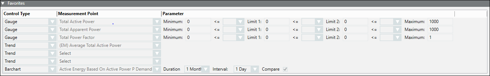

Favorites Expander
- Control Type: (read only) Displays the modes of representation of the parameters configured. You can display the parameters through three gauges, three trends and one bar chart.
- Measurement Point: Lets you select the measurement points to be configured for the corresponding device under the Device column.
- Parameter: Lets you set the limits of the gauges and the color for the representing the corresponding measurement point.
- Duration: Lets you specify the duration and time interval for which the values have to be recorded.
To compare values, select the Compare checkbox.
